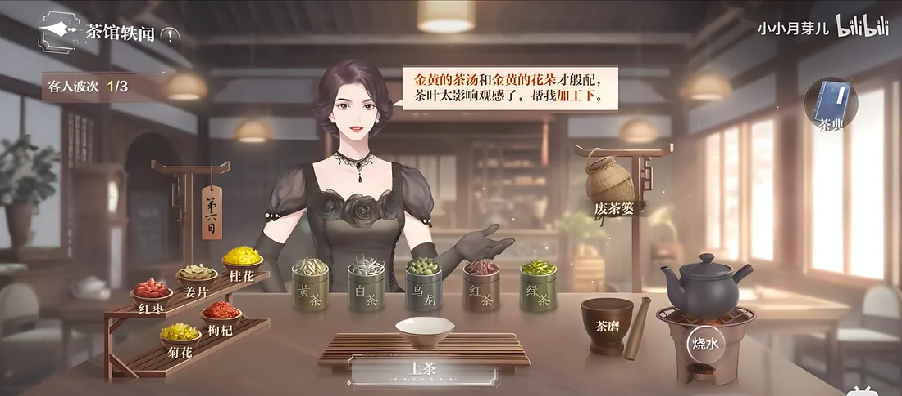
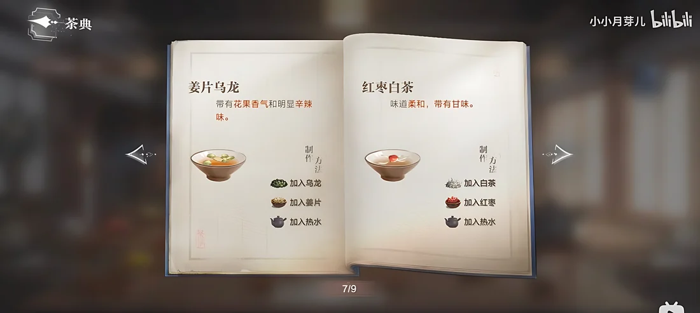
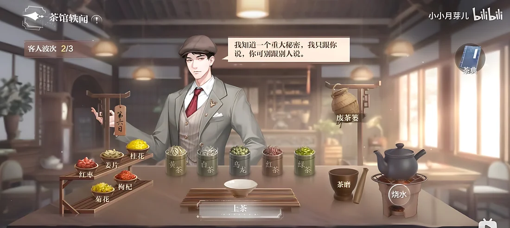
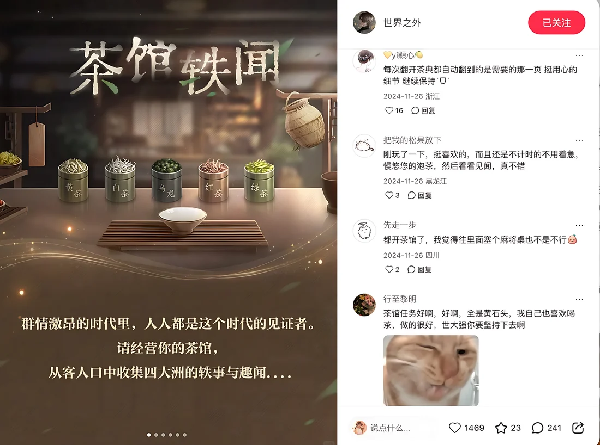

A tea-serving event built on one bet: in a genre defined by countdown timers, removing the timer completely would be what players noticed most. They did.
Serving mini-games run on countdown timers, but this game promises its players a place to relax.
The core loop, material system, clue system and story integration of a six-day event with no timers and no penalties. I was the lead event designer.
Players named the no-timer decision themselves and asked for the event to become permanent. The official post drew 1,469 likes and 241 comments.
The brief was a one-week event with low-pressure daily content. The obvious format was a serving mini-game, but that format comes with a built-in problem.
Serving mini-games in mobile games almost always run on countdowns: order timers, patience meters, shift clocks. Players arrive expecting it. Anyone who has played a cooking or serving game expects to be rushed before the first guest sits down.
World Beyond promises its players companionship and a place to relax. A timer-driven mini-game would work against the reason players open the game.
Take a format known for time pressure and rebuild it so that the rules themselves keep it relaxing, while still giving players a real puzzle and a story reason to come back six days in a row.
Players run a small teahouse. Guests describe what they want, but never directly. The game replaces time pressure with deduction. It asks for attention instead of speed.
Each guest hints at their order in vague, indirect language across three dimensions at once.
Cross-reference the in-game Tea Compendium to translate hints into a concrete combination.
Pick a base, add ingredients, grind or not, pour. The short wait for the water to boil is part of the ritual.
A satisfied guest shares a rumor about one of the male leads. The rumor is what players are really playing for.
Determines the color of the tea, which guests describe visually.
Determines flavor, which guests describe by taste and scent.
Determines texture and appearance, which guests describe by form.
It would have been easy to make the event only look calm, with soft music and warm colors, while keeping punishing rules underneath. Instead, I made the rules forgiving at every point the player touches.
A wrong combination gets a gentle reply ("This doesn't quite suit my taste. Could you try again?") and the player simply retries. There is no penalty and no lost attempt, and the gossip is never blocked by a mistake. Every session ends in success.
No action in the event has a time limit. The only wait is the few seconds while the water boils, and it is presented as part of brewing tea, not as a meter to beat. There is no countdown anywhere in the event.
Tea base, additives and hot water can be added in any order with the same result. Only the final combination is checked. This removes one hidden way to fail (remembering a sequence), so the player's attention stays on the interesting part: working out the recipe.
The three levels work together: "no pressure" has to be true in the rules, not only in the look. If any one level had been skipped, the other two would have felt like decoration.
The brewing game was never meant to stand alone. Its job is to make players curious, and the story content then answers that curiosity.
Spend an action point, serve three guests, solve three small puzzles.
Two of the three guests share rumors about a male lead. These are fragments, not full stories.
The player brings the rumor to the male lead it is about, already curious.
Exclusive event dialogue resolves the gossip by confirming it, overturning it, or explaining it.
The order matters. By the time the player reaches the male lead, they already have a question they want answered. The visit feels like following up on something they care about, not like collecting a quest reward.

A guest gives her clues: "golden soup to match golden flowers" (color → Yellow tea) and "the leaves spoil the look, process them for me" (form → grind to powder). The hints come as dialogue, not as a checklist.

The Tea Compendium is always one tap away. Each entry shows a finished tea with its color, flavor and steps, so every order can be worked out without memorizing anything.

The guest is satisfied and leans in: "I know a big secret. I'll only tell you. Don't pass it on." What the player earns from the mini-game is also the start of the story.
Community discussion during the event ran notably higher than for comparable events of the same size. The more interesting evidence is what players chose to praise. Quotes are translated from Chinese.
The fact that there's no timer is so good. Other games have made me anxious just seeing a serving counter. You didn't do that. Thank you.
Every minigame in this game is so interesting, and this one even incorporates traditional culture.
I used to love tea-brewing minigames on casual game platforms back in the day. I can't believe this game just did that. I love it.
Otome games should all follow this game's minigame standard: variety and fun.

The event was relaxing only because results, pacing and input rules each enforced it. A goal that exists only in the art direction breaks at the first punishing mechanic.
A serving game with no timer and nothing else is just slow. The deduction layer (three clue dimensions, one compendium, solvable puzzles) is what made the calm version engaging.
Earning gossip from the mini-game made players want to visit the story. Gameplay and story work best when one creates demand for the other.
Serving games keep the countdown timer mostly because nobody removes it, not because players want it. The strongest praise went to something that was taken out.